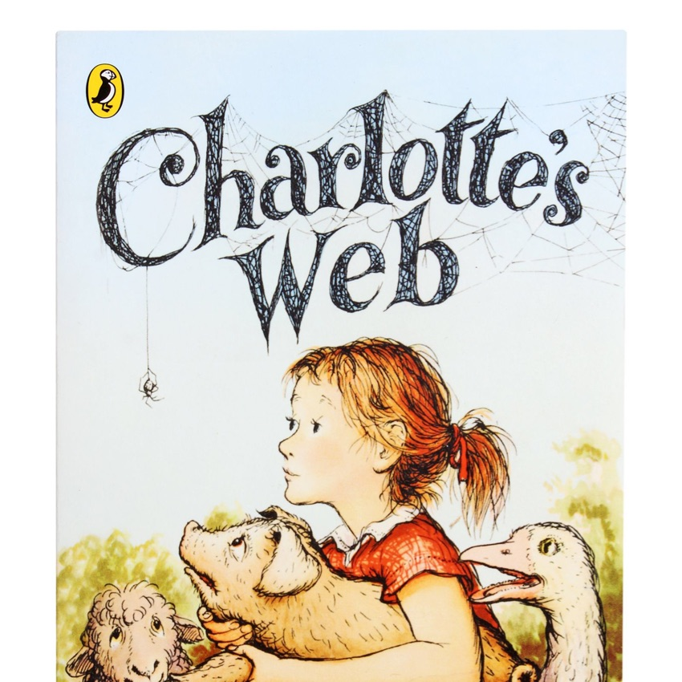
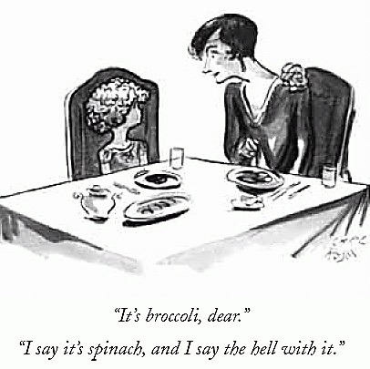
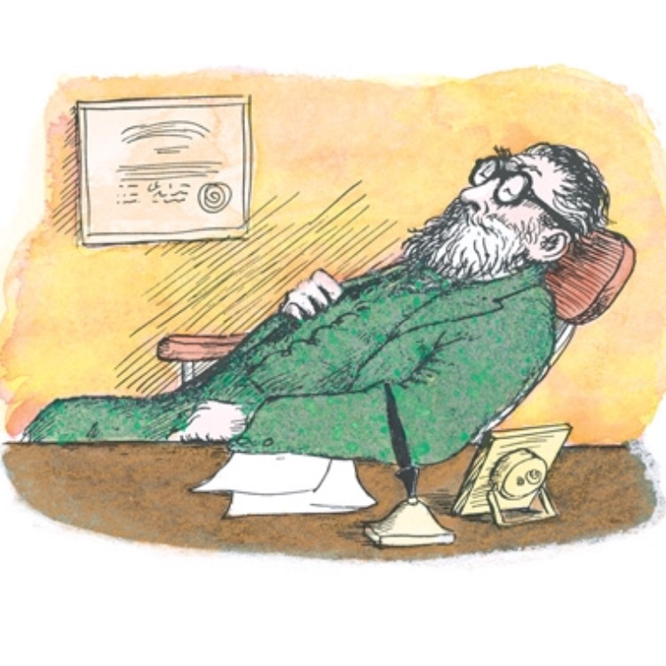
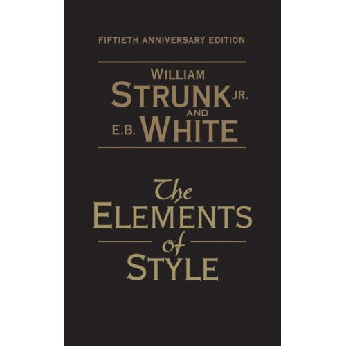
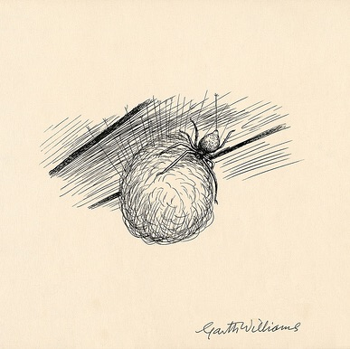
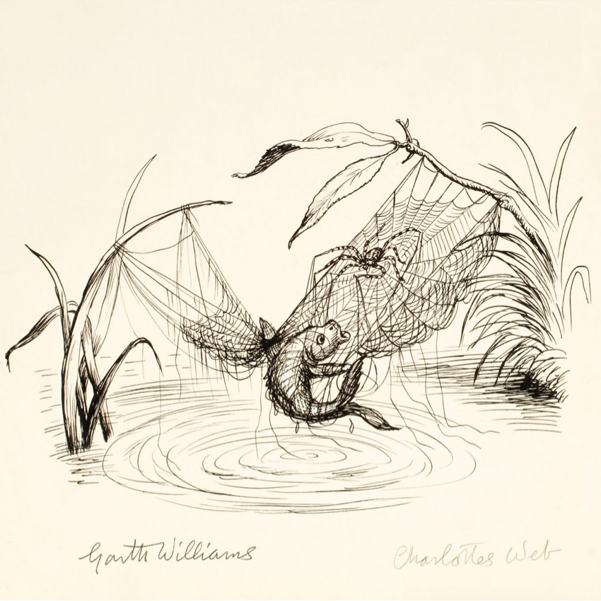
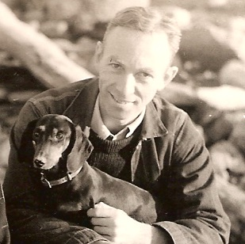

E.B. WHITE IS LIKE MY HERO
-
"I arise in the morning torn between a desire to improve the world and a desire to enjoy the world. This makes it hard to plan the day."
-

He wrote Charlotte's Web
"What's a life, anyway? We're born, we live a little while, we die. A spider's life can't help being something of a mess, with all this trapping and eating of flies. By helping you, perhaps I was trying to lift up my life a trifle. Heaven knows anyone's life can stand a little of that."
-

He had a tremendous sense of humor.
He captioned this New Yorker comic, which is one of my all time favorites and I was so stoked when I learned he wrote it. You also must read his letter to the ASPCA about his allegedly unlicensed dog, Minnie: http://www.lettersofnote.com/2012/02/she-doesnt-answer-phone.html?m=1
-

He gave great advice on parenting.
"Does she look well?" asked the doctor. "Oh, yes." "Appetite good?" "Oh yes, she's always hungry." "Sleep well at night?" "Oh yes." "Then don't worry…I think she will always love animals. But I doubt she spends her entire life in Homer Zuckerman's barn cellar."
-

He was an impeccable writer.
"The Elements of Style" by Strunk and *White* right? Every word he ever wrote was clear and beautiful. He once said "All writing is both a mask and an unveiling."
-
He had a rational optimistic outlook and took time to share it with others.
"Hang on to your hat. Hang on to your hope. And wind the clock, for tomorrow is another day." http://www.lettersofnote.com/2012/01/wind-clock-for-tomorrow-is-another-day.html?m=1 (hat tip to @shaun).
-

He saw beauty everywhere.
"I'm sorry to learn that Dr. Cranby is revolted by spiders. Probably doesn't meet the right spiders."
-

His approach was intricate and considered.
"In writing of a spider, I did not make the spider adapt her ways to my scheme. I spent a year studying spiders before I ever started writing the book. In this, I think I found the key to the story."
-
He was consciously unselfconscious.
"Bashfulness is a form of vanity, the only difference being that vanity is a tendency to overestimate your worth, and bashfulness to underestimate it; both arising from the overindulgence of self-consciousness."
-
He was a happy socially adept introvert.
"I move in a desultory society and often a week or two will roll by without my going to anybody's house to dinner or anyone coming to mine, but when an occasion does arise, and I am summoned, something usually turns up (an hour or two in advance) to make all human intercourse seem vastly inappropriate."
-

He was deeply humanist.
"When we slid the body into the grave, the loss we felt was not the loss of ham, but the loss of pig. He had evidently become precious to me, not that he represented a distant nourishment in a hungry time, but that *he had suffered in a suffering world.*" From "Death of a Pig" http://www.theatlantic.com/magazine/archive/1948/01/death-pig/309203/
-
"I knew that what could be true of my pig could be true also of the rest of my tidy world."